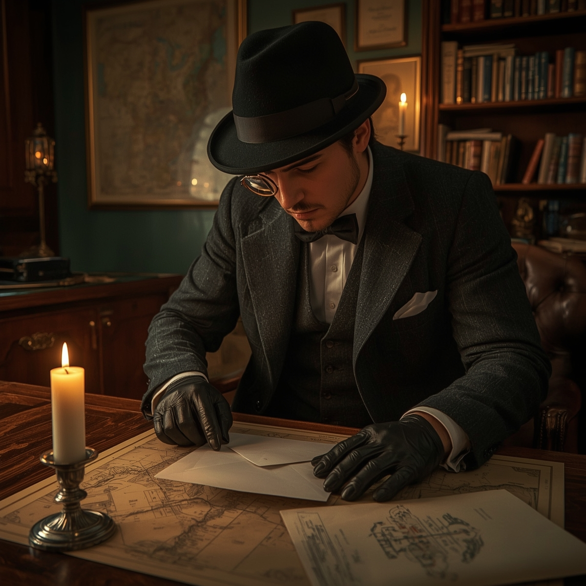

Escena 1: Una carta misteriosa
Una noche lluviosa en París, Arsène Lupin encuentra una carta sin remitente en su escritorio. Dentro, un plano del Museo de Arte y una nota:
"En la sala 3 se encuentra la clave del Tesoro de los Templarios. Pero cuidado: no serás el único tras ella." Lupin sonríe. Un nuevo reto.